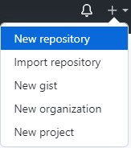
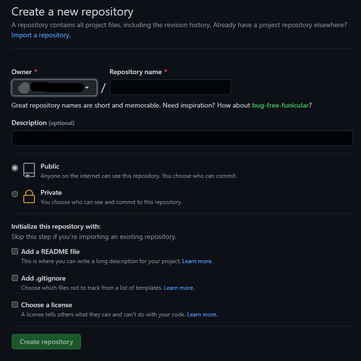

Basics of Git and Github Introductory for Beginners
What is Git?
Git is a Version control system or for tracking changes in a file. This is usually used for collaboration for its speed and a non linear Workflow.
What is Github? 
Github is an internet hosting site that is used with git. Github provides a web GUI (Graphical User Interface) experience for Git and distributing source code in public.
Main Differences of Git and Github:
- Purpose
- Availability and storage
The purpose of Git is to make track of the changes in folder. It is also used to provide non-linear workflows for collaborators to prevent them from stepping on their toes.
Meanwhile, the purpose of Github is to host the git repository in its website. This is for open-source projects and cloud-based collaboration.
While git repositories can be stored in your local system, github repositories is store on the cloud. The availability of the repository will depend if the repository is cloud-based or not. If the repository is not cloud-based, you can only access it in your local device (desktop).
Requirements
Warning: The steps must be taken down by order to avoid confusion and to follow through the tutorial.
- Download the Latest version of Git Git Download
- Create an account on Github Github Sign up
- Create an SSH key
- Change local default branch (master to main)
- Unix/Git bash basic commands (optional for now)
How to create an SSH key
How to change local default branch
In some point you'll need to know the basic commands in the command line. Don't be afraid though because it is simple as long you'll get along with the unfamiliar terms and concept. Commands are just buttons in text as I like to call it
Basic Tutorial
This go on a walkthrough on the basics of Git and How to use it
Create a Repository
Go to Github (Make sure your already signed up) and click the + button in the top left corner and click "New Repository".
Then add your desirable Repository name (Advised name: Git_Test), Make sure it's public and check the "Add a README file". It is also optional to add a .gitignore to ignore files when being pushed upstream in a repository.
Now you can see a new repository in your screen. Good job! You've just created new repository
Clone the Repo in your local folder
Go to your Git Terminal/Git bash and proceed to do a mkdir
command to make your directory in which will be the place to Clone
your repo in Github
Back to Github and in the upper part of the repo, click the green button with the "Code" text in it. Click the SSH category at the upper part and copy the link below
Git basic commands
git init - Initializes repository
git branch - shows a list of branch that are included in the local repositorygit branch <name> - Creates a new branch
git add <filename> - Adds a file that will be staged for commit
git commit -m <message> - commits the file with the -m subcommand to add a message
git switch <branchname>git checkout <branchname> - switches to the branch
git fetch origin - fetches the commits of the branch in a remote repository (example: Github)git clone <githublink> - clones the repository in githubgit merge<branchname> - Merges the current branch with another branchgit push --set-upstream <repo origin> <currentbranch> - publishes the a local branch in github